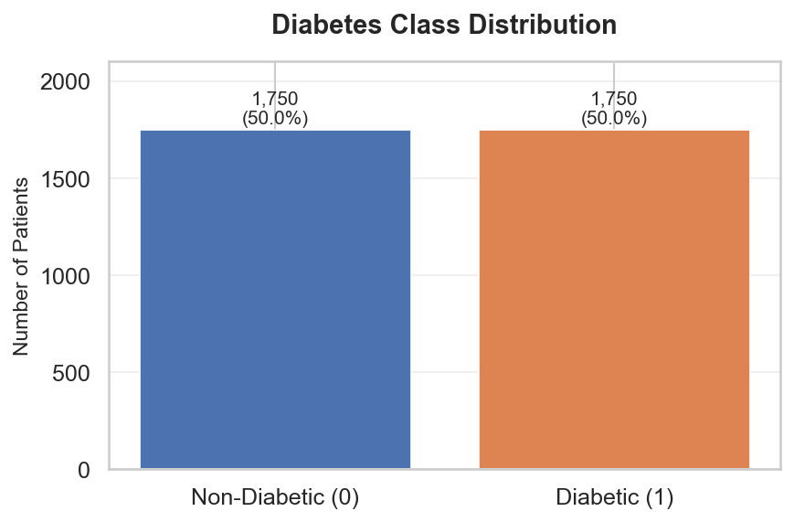
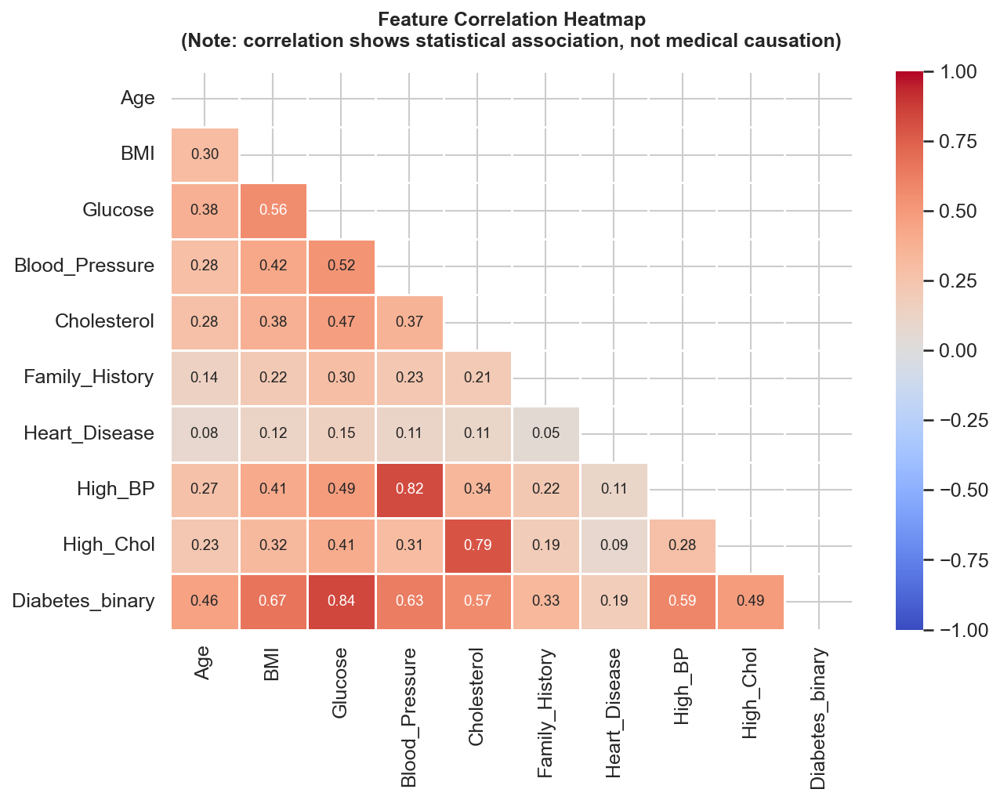
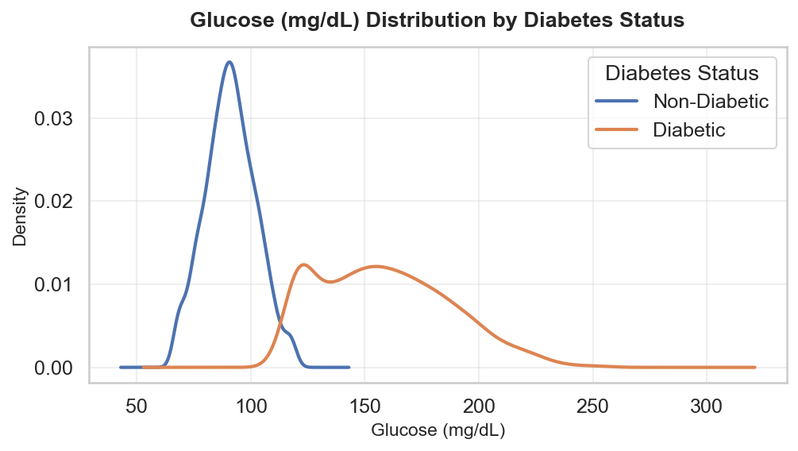
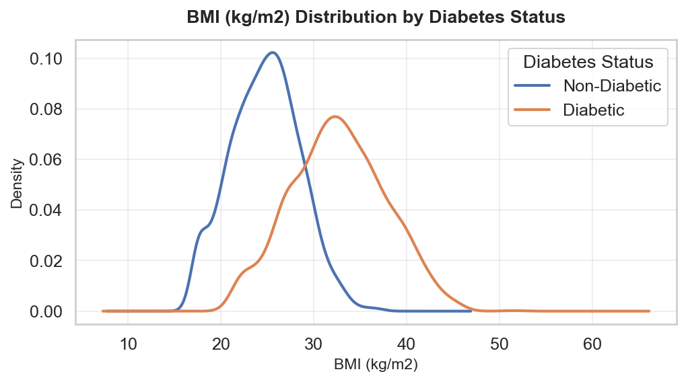
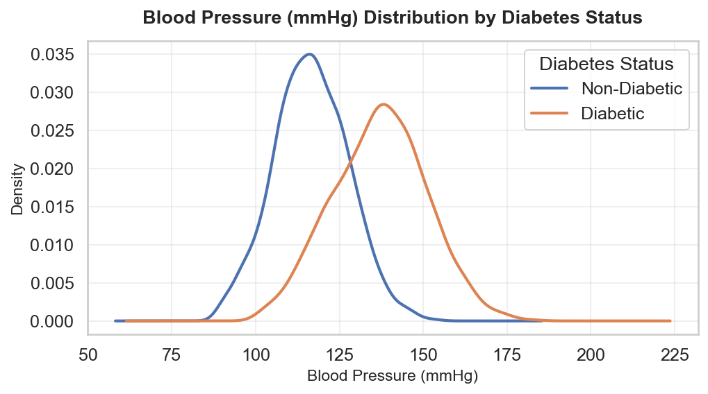
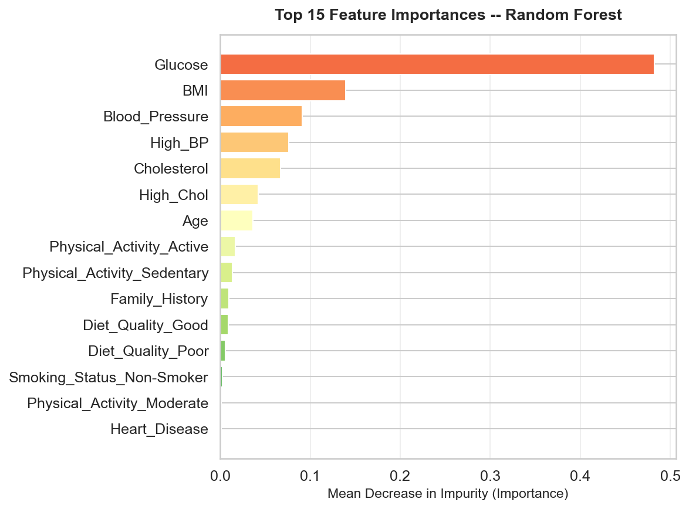
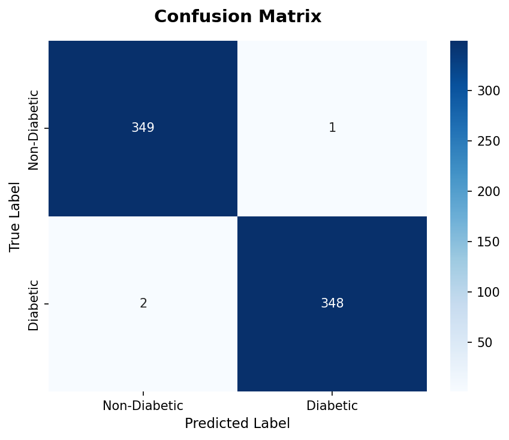
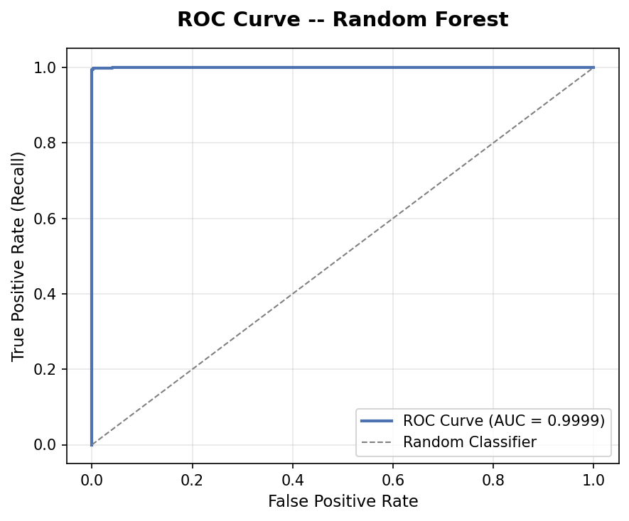

Non-Diabetic
Stratification: 🟢 Low Risk (Estimated probability: 4.6%)
Diabetic Probability
4.6%
🟢 Tier: Low Risk
Non-Diabetic Likelihood
95.4%
Complementary Health Profile
🔬 Clinical Biomarker Reference Assessment
Fasting Glucose
105 mg/dL
Impaired (100–125)
BMI Index
27.0 kg/m²
Overweight (25–29.9)
Blood Pressure
122 mmHg
Elevated (120–129)
Total Cholesterol
195 mg/dL
Desirable (< 200)
💡 Tailored Health & Lifestyle Guidance
- ⚖️ Weight Management: Current BMI is 27.0 kg/m². A sustained 5–10% body weight reduction significantly enhances insulin sensitivity.
- 🥗 Nutritional Optimization: Emphasize high-fiber, complex carbohydrates and leafy greens to stabilize post-prandial glycemic excursions.
📊 Dataset Characteristics
Total Records
3,500
Full Cohort
Features
13
Clinical & Lifestyle
Imputed Values
464
Median / Mode
Class Balance
50% / 50%
Balanced Target
Feature Architecture & Data Types
| Feature Column | Data Type | Role | Imputation / Encoding |
|---|---|---|---|
| Age | Numerical | Feature | StandardScaler |
| BMI | Numerical | Feature | Median Imputer + StandardScaler |
| Glucose | Numerical | Feature | Median Imputer + StandardScaler |
| Blood_Pressure | Numerical | Feature | Median Imputer + StandardScaler |
| Cholesterol | Numerical | Feature | StandardScaler |
| Family_History, Heart_Disease, High_BP, High_Chol | Binary (0/1) | Features | Most-Frequent Imputation |
| Sex, Physical_Activity, Diet_Quality, Smoking_Status | Categorical | Features | OneHotEncoder (handle_unknown='ignore') |
| Diabetes_binary | Binary (0/1) | Target | Stratified Ground Truth |
🏥 Diagnostic & Healthcare Analytics Visualizations
Generated directly from the 3,500-patient cohort. Note: Statistical association indicates co-occurrence, not medical causality.
Target Class Distribution

Feature Correlation Heatmap

Glucose Distribution by Diabetes Status

BMI Distribution by Diabetes Status

Blood Pressure Distribution

Top 15 Feature Importances (Random Forest)

📈 Test Set Performance (N = 700 Stratified Samples)
Accuracy
99.57%
Precision
99.71%
Recall
99.43%
F1-Score
99.57%
ROC-AUC
0.9999
Confusion Matrix Heatmap

ROC Curve (AUC = 0.9999)

🏆 Baseline Supervised Classifier Comparison
| Architecture | Accuracy | Precision | Recall | F1-Score | ROC-AUC |
|---|---|---|---|---|---|
| Random Forest (Primary) | 0.9957 | 0.9971 | 0.9943 | 0.9957 | 0.9998 |
| Logistic Regression | 0.9929 | 0.9971 | 0.9886 | 0.9928 | 0.9998 |
| Support Vector Machine (RBF) | 0.9914 | 0.9971 | 0.9857 | 0.9914 | 0.9997 |
| Decision Tree | 0.9886 | 0.9858 | 0.9914 | 0.9886 | 0.9926 |
| K-Nearest Neighbors (k=5) | 0.9814 | 0.9913 | 0.9714 | 0.9812 | 0.9977 |
Random Forest was chosen as the primary classifier because it combines state-of-the-art recall (99.43%) with stable generalization and minimal variance across independent test splits.